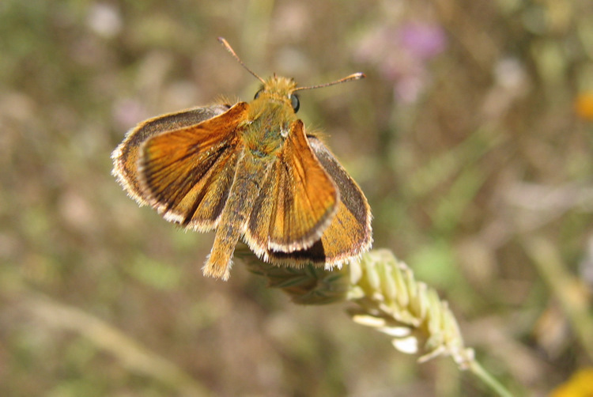
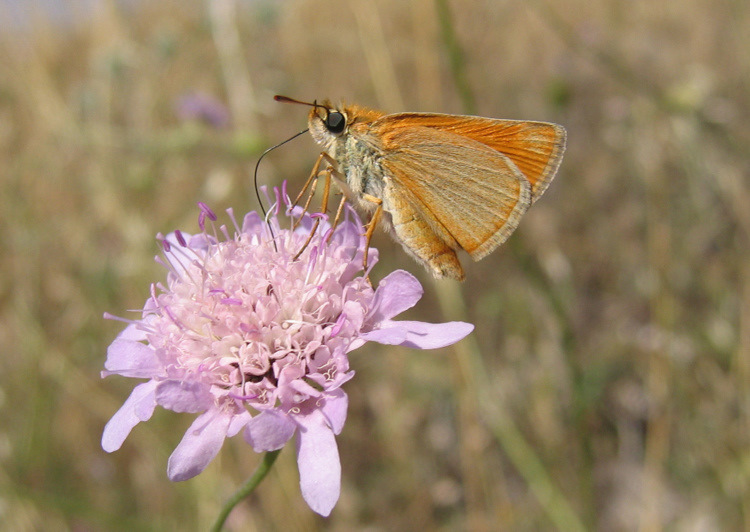
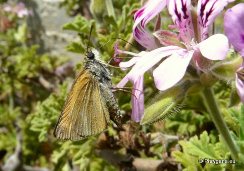
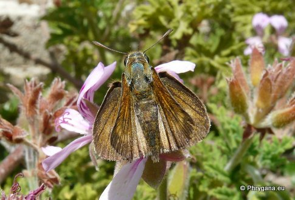
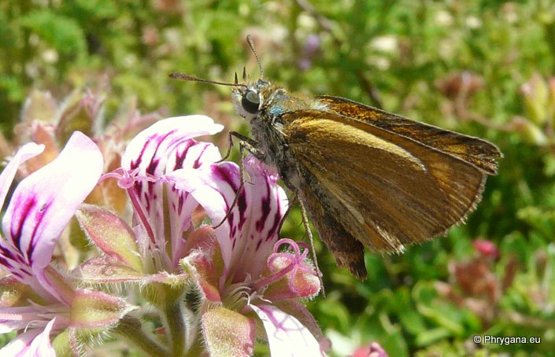

| PHRYGANA | Fauna | Flora | Galles | liste des espèces |
contact -
info - commentaires phrygana1 (at) gmail.com |
| Particularités crétoises | nouveautés | Mines | ressources naturelles |
| Thymelicus acteon (Rottemburg 1775) |
| 41 | Fauna | HESPERIIDAE | Hesperiinae | Thymelicus Hubner 1819 |
|
 Thymelicus acteon Apodoulou 09 juin 2005 |
| fr: l'Hespérie du Chiendent en: Lulworth Skipper de: Mattscheckiger Braundickkopffalter nl: Dwergdikkopje | |
| Adulte: envergure de 22 à 26 mm. Couleur de fond brun fauve. Il y a quelques petites taches postdiscales, peu visibles. Chez le mâle, le trait androconial est bien marqué sur l'aile antérieure. | |
| Chenille trouvée entre fin
mai et octobre. Oeufs petits, ovales , nacrés, à reflet verdâtre,
pondus et introduits dans les fentes des gaines foliaires des
plantes-hôtes. L'incubation dure 2 à 3 semaines. Les chenilles ont une couleur vert clair avec une bande dorsale vert foncé (avec une fine ligne médiane vert très clair au milieu), bordée de chaque côté par une bande vert blanchâtre. Quelques jours après son éclosion, la chenille commence la construction d'un cocon dans lequel elle entrera en diapause jusqu'à la fin de l'hiver. La chrysalide (de couleur verdâtre) est attachée verticalement à une tige de Graminée. |
|
| La chenille est oligophage: diverses Poaceae (dont Hyparrhenia hirta, Bromus sp.). | |
| Espèce univoltine: période de vol en mai juin juillet août. | |
| Statut en Crète: indigène -- native | |
| Biotopes en Crète: phrygana, pelouses sèches, bords des chemins, vieilles olivaies, talus arides. | |
| Altitudes: 0 - 1000 (- 1500) m. | |
| Distribution: Europe centrale et méridionale, Moyen-Orient, Asie centrale | |
|
 Thymelicus acteon Apodoulou 09 juin 2005 |
|

 Thymelicus acteon Agios Giorgos (Melambes) 20 mai 2013 |
|
 Thymelicus acteon Agios Giorgos (Melambes) 20 mai 2013 |
| 25 mai 2013 |
| © paul fontaine -- © Phrygana.eu 2007 -- 2013 |